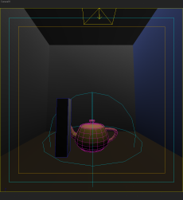
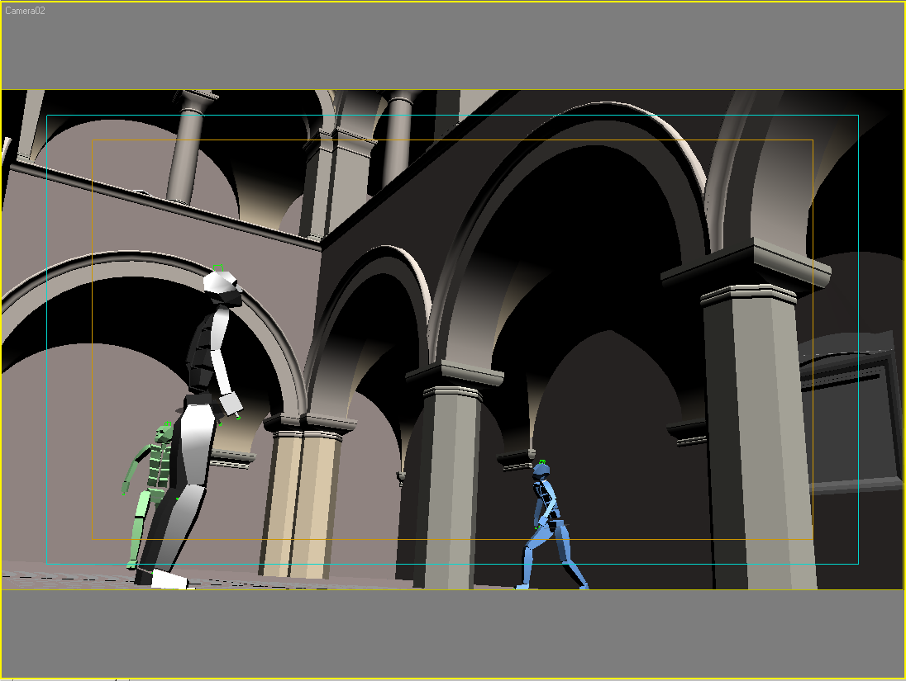
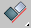
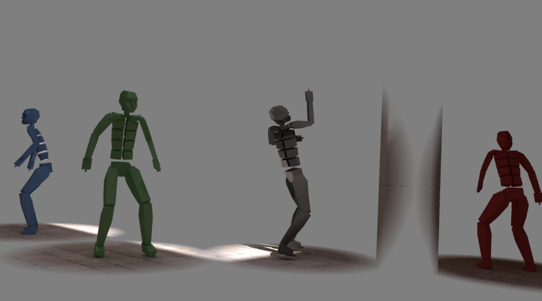
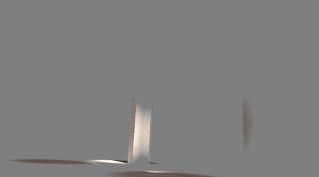
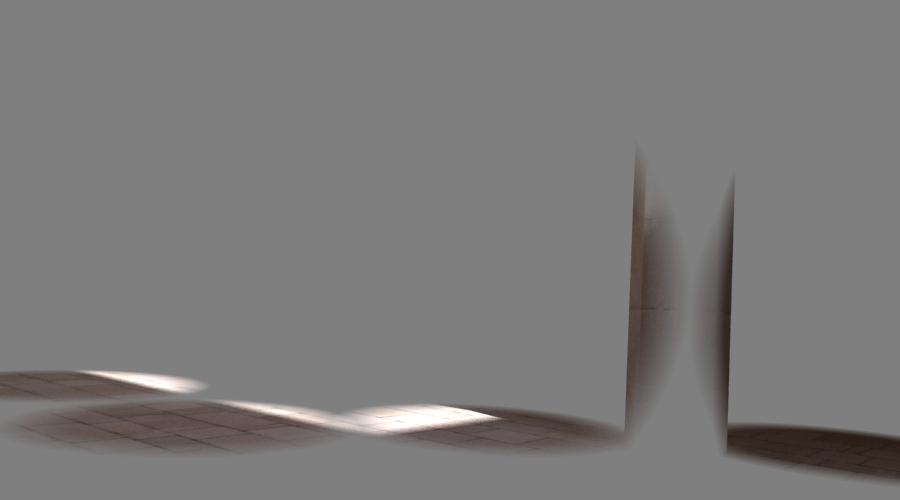

Rendering an Animation with Moving Objects
Note: the scene used for this tutorial was based on the Sponza Atrium scene, modeled by Marco Dabrovic ( http://www.rna.hr ) and was one of the models for the CGTechniques Radiosity competition.
Rendering an Animation with Moving Objects Overview
In this tutorial, we will render an animation with moving objects and GI with V-Ray. The goal is to make the process as efficient as possible. We can always use a high-quality GI solution to render an animation without any special tricks; however, this will typically take very long. We would like to optimize this process as much as possible.
Typically, we have a small number of moving objects (i.e. a few characters) in some more complex environment. Our main optimization idea uses this fact: we can split the animation into a background part and animation part.
Since the background does not move, we can render it using a walk-through animation method, for example, as pointed out in this tutorial . Then we can render out the moving objects, and composite these for the final animation.
Compositing Basics
Before we go into details on rendering the animation, we will cover some compositing basics.
Our task is this: given an object in a 3d scene, we would like to composite it over a given background, taking into account as many effects as possible (shadows, reflections, GI etc).
This is typically done with the help of two layers with the 3d object, which are then composited over the background. We will call one layer a mask layer, and it determines which parts of the background are altered by the 3d object, and which parts remain the same. The mask layer is multiplied by the background. We will call the second layer object layer, and it determines what color must be added to the masked background in order to get the final image. The object layer is added to the masked background.
So, in general, the compositing formula is this:
final_image = background_layer * mask_layer + object_layer
Our background layer is given, and we don't have to worry about it. It may be a photograph, live footage, or a prerendered image. We must determine only the mask layer and the object layer. We will compute these using three separate renderings of the 3d object:
-
a render without the object; we will call this "pure" render;
-
a render with the object, but with a perfectly black material applied to the object; we will call this "black" render;
-
a render with the object with a normal material; we will call this "normal" render.
Given these three renders, we can compute the mask layer and the object layer in this way:
mask_layer = black / pure;
object_layer = normal - black;
Then, we can use the mask and object layers to composite the final image.
Compositing in 3ds Max
Now, let us apply all this theory in practice. We will use 3ds Max for compositing, but this can be done in any compositing program that supports the necessary image operators (addition, difference, multiplication, and division) - for example, Digital Fusion.
U nfortunately, 3ds Max does not have the necessary compositing operators built-in, so we are going to use an additional plugin, the VRayCompTex texture map, which you can download here (extract the .dlt file in the\plugins\vrayplugins\ folder of 3dsmax).
This is the background plate that we will use:
We are going to add a teapot in the middle of this rendering.
1.1. Open the starting scene, which can be found here. The scene is not exactly the same as the one that was used for the background plate, but it is close enough for the composition. In general, you should try to match the plate as best as possible. If the background plate is a rendered 3d scene, then it would be best to use the same scene.
1.2. Render the scene and save it as "normal.png" with 48 bits per pixel (for increased precision during the compositing later on).
1.3. Open the material editor, create a new VRayLightMtl and assign a pure black color to the material - or you can use the black mtl material in the ME. Apply the material to the teapot in the scene.
1.4. Render the scene and save it as "black.png" with 48 bits per pixel (for increased precision).
1.5. Hide the teapot.
1.6. Render the scene and save it as "pure.png" (again, with 48 bits per pixel).
This is all the work we have to do with the 3d scene. Now we are going to composite the final result.
1.7. Open 3ds Max with an empty scene.
1.8. Open the Material Editor and put the four images (normal.png, black.png, pure.png and the background) into four separate bitmap textures; set the mapping mode of the bitmaps to Screen environment.
Now we will create the mask and object layers.
1.9. Create a VRayCompTex and name it object.
1.10. Drag the normal bitmap onto the Source A bitmap slot in the VRayCompTex (choose the Instancemethod when prompted).
1.11. Drag the black bitmap onto the Source B bitmap slot in the VRayCompTex (again, choose the Instancemethod).
1.12. Set the Operator of the VRayCompTex to Difference. This is what you should get:
Now we have our object layer. Next, we need to create the mask layer.
1.13. Create a new VRayCompTex in an unused slot of the material editor and name it mask.
1.14. Drag the black bitmap onto the Source A bitmap slot in the VRayCompTex (choose the Instance method when prompted).
1.15. Drag the pure bitmap onto the Source B bitmap slot in the VRayCompTex (again, choose the Instancemethod).
1.16. Set the Operator of the VRayCompTex to Divide. This is what you should get :
Now we have the mask and object layers for the final compositing. We need to combine these with the background to get the final image.
1.17. Create a new VRayCompTex in an unused slot of the material editor and name it "masked bg".
1.18. Drag and instance the mask texture into the Source A slot of the VRayCompTex map.
1.19. Drag and instance the background bitmap into the Source B slot of the VRayCompTex map.
1.20. Set the Operator of the VRayCompTex to Multiply.
Now that we have the masked background map, we need to add the object map to it.
1.21. Create a new VRayCompTex in an unused slot of the material editor and name it "final".
1.22. Drag and instance the masked bg map into the Source A slot of the VRayCompTex.
1.23. Drag and instance the object map into the Source B slot of the VRayCompTex.
1.24. Set the Operator of the VRayCompTex to Add.
This is our final composite texture map. Here is a schematic view of how we have connected the four input images:

Now we need to render that map in order to get the final image.
1.25. Open the Render scene dialogue and in the Common Tab set the resolution to 600x600 (the resolution of all our images in this section).
1.26. Set the current renderer to Default scanline.
1.27. In the Renderer tab, turn off the Antialiasing option.
1.28. Turn off the Filter maps option.
1.29. Open the Environment dialog and assign the final map as an environment map.
1.30. Render the scene:
Here is the final scene for the composite that you should get if you followed all the steps correctly.
The beauty of using this method is that it can composite properly all effects (reflections, shadows, GI, etc.), without having to worry about any matte/shadow stuff or anything in 3dsmax.
The VRaySphereFade Plugin Atmospheric
We will use the same workflow as defined above, to render our entire sequence. However, we have to render our animation three times. With more heavy scenes, this means a lot of rendering. The correct calculation of GI effects requires all of the scene geometry, so we can't just remove it to speed things up.
Most of the effects that we are interested in (shadows, reflections, GI) appear near the animated object in the scene. Ideally we would like to render only those parts, and skip re-rendering the entire image.
This is where the VRaySphereFade atmospheric comes into play. It allows you to render only that part of the scene, which is located near the animated object. The rest of the scene is shown as a solid grey color. However GI, reflections, shadows, etc. are still computed using the entire scene, so that they produce the correct effect.
Here is how we would use the VRaySphereFade plugin in the scene from the previous part.
2.1. Open the starting scene which can be found here.
2.2. Open the Environment dialogue and add the VRaySphereFade atmospheric.

2.3. Create a spherical gizmo object around the teapot. Typically, you will surround each animated object with a gizmo linked to that object:
2.4. Click the Pick button in the VRaySphereFade parameters and then click the newly created gizmo.
2.5. Go to the V-Ray System rollout and check the Optimized atmospheric evaluation option - this will speed up a lot the rendering of the areas masked by the atmospheric.
2.6. Render the scene:
You can see how only the parts of the scene inside the gizmo are visible to the camera. Note the grey color - because we are computing our mask layer through division, it is not a good idea to have pure black colors in the "normal" image.
Proceed as in the previous step to create the pure, black, and normal renders, and to composite them onto the background. The result is this:

Normal layer

Black layer
Pure layer
Object layer = Normal - Black
Mask layer = Black / Pure

Final composite over the background plate
It is quite close to the result in the previous section, and it was a lot faster to calculate. Here are comparisons between the two composites that we got, as well as a rendering of the original scene with the teapot inside it:
Original rendering of the scene with the teapot

Full-scene compositing
Compositing with VRaySphereFade
Using the VRaySphereFade plugin, we can control how much an object will affect its surroundings. For GI effects, it is usually enough to limit the influence not far away from the object. However, some effects (like long shadows, or reflections on surfaces at grazing angles) may require larger spheres of influence. An alternative in that case would be to add more gizmos to capture those effects, or to render them in a separate pass and composite them separately.
Workflow
Now we have all the necessary information to render our animation. This is done in 4 steps:
a) Render the background as a walk-through animation, without the animated objects.
b) Create and link gizmos to the animated objects, create a VRaySphereFade atmospheric and add those gizmos to the atmospheric.
c) Render the animation with the moving objects normal, black, and hidden respectively into three separate animations.
d) Composite the background animation out of the four other animations.
Rendering the Layers
a) First, we need to render the background template which will serve as a basis on the moving characters. We will do this similarly to how it is described in the Walk-through animation tutorial . We will calculate the light cache first.
3.1. Open the starting background scene.
We have rendered all animations at a resolution of 900 x 500 pixels. This may take quite a while (it took more than two days to render the three character animations when preparing this tutorial), so you may want to use lower resolution, for example, 450 x 250.
3.1a. In the Common tab of the Render scene dialogue, set the rendering resolution to 450 x 250 pixels.
3.2. Turn off Default lights in the Global switches rollout.
3.3. Set the Antialiasing to Adaptive DMC with the default settings of 1/4.
3.4. Turn on GI and set the primary and secondary engines to Light cache.
3.5. Set the light cache Subdivs to 4000, Sample size to 4.0 and Scale to World.
3.6. Switch the light cache Mode to Fly-through and for display purposes turn on Show c alc . phase.
3.7. Turn on Use light cache for glossy rays and set Interp. samples to 5.
3.8. In the GI Environment group of the Environment rollout, turn on the Override MAX's option and set the Multiplier to 2.0.
3.9. Render any frame of the animation to calculate the light cache.
3.10. Save the light cache and change the Mode to From file with the just saved file.
Once we have the light cache ready, we need to calculate the irradiance map.
3.11. Change the Primary GI engine to Irradiance map with High preset.
3.12. Set the Noise threshold in the DMC Sampler rollout to 0.002.
3.13. Turn on the Don't render final image option in the Global switches rollout.
3.13. Set the irradiance map Mode to Multiframe incremental.
3.14. Render every 10th frame of the animation to calculate the irradiance map.
3.15. Change the irradiance map Mode to From file with the just saved file.
3.16. Turn off the Don't render final image in the Global switches rollout.
3.17. Render every 1st frame of the final background animation with the saved GI solutions and save the animation as a 48bit .png sequence.
Now we have a ready background template that will be populated with the moving objects.
Here is the end scene for stage a).
b) Now we will use sphere gizmos and VRaySphereFade atmospheric to isolate the moving objects in the scene, so we can composite them later with the ready background.
3.18. Continue with the background scene from part a) and unhide the four biped characters in the scene.

3.19. Create four sphere gizmos with radius of about 80.
3.20.  Align each of them to each Biped COM object (Bip01, Bip02, Bip03, Bip04).

3.21. Open the Environment dialogue and add the VRaySphereFade atmospheric.
3.22. Add the four gizmos in the list.
Here is the end scene after the gizmos setup.
c) For the rendering of the three animations we will use brute force GI as a primary GI engine to avoid flickering problems on and around the characters.
3.23. Change the Primary GI engine to Brute force GI with 25 subdivs.
3.24. Change the light cache Subdivs to 3000.
3.25. Change the light cache Mode to Single frame.
3.26. Go to the System rollout and turn on the Optimized atmospheric evaluation option - this will accelerate the calculation considerably.
First, we will render the normal animation.
3.27. Render the whole sequence to 48-bit .png files.
Frame 145

Frame 268
Second, we will render the black animation.
3.28. Apply a black VRayLight material to the four biped characters and render the entire sequence to 48-bit .png files.

Frame 145
Frame 268
Third, we will render the pure animation.
3.29. Hide all the biped characters and render the whole sequence again.

Frame 145

Frame 268
Now we have all the necessary animations to composite the final animation.
Final Compositing
In this part, we will amalgamate the normal, black, and pure animations with the help of the VRCompTex map.
4.1. Open a new scene in 3ds Max and open the Material editor.
4.2.  Load the normal, black, and pure animation sequences in three different slots and name them "normal", "black", and "pure".
Load the normal, black, and pure animation sequences in three different slots and name them "normal", "black", and "pure".
4.3. Also, load the background animation that we rendered before.
4.3. Change the display type of all four textures to Environment with Screen mapping.
4.4. Make four VRayCompTex maps into four unused slots.
4.5. Drag-drop the normal map into Source A, the black map into Source B, change Operator to Subtract in the first VRayCompTex map and name it object.
4.6. Drag-drop the black map into Source A, the pure map into Source B, change Operator to Divide in the second VRayCompTex map and name it mask.
4.7. Drag-drop the mask map into Source A, the background map into Source B, change Operator to Multiply in the third VRayCompTex map and name it masked bg.
4.8. Drag-drop the masked bg map into Source A, the object map into Source B, change Operator to Add in the fourth VRayCompTex map and name it final.
We have just followed the scheme that we described earlier in the Compositing with 3ds Max section.
4.9. Drag-drop the final map into the Environment map slot of the Environment dialogue of 3ds Max.
4.10. Change the renderer to Scanline.
4.11. In the Renderer Tab of the Render scene dialogue, switch off Antialiasing and Filter Maps.
4.12. Render the final animation.
Here is the compositing scene.
Here is a link to the final rendered animation at the original 900x500 resolution (5 MB), and here is a link to a smaller version (2 MB). You can also view the low res video below. Note they only play in certain browsers. Your browser does not support the HTML5 video element
Let us look at one frame of the animation:
You can notice that the character shadow for the metallic biped is cut off where its sphere gizmo ends. This is because we used somewhat smaller gizmos when we rendered the animation, in order to save render time. To make the full shadow visible, you can either enlarge the gizmo for that character, or use another gizmo near the ground, specifically for the purpose of capturing the shadow. If we have lights that cast long shadows, or the shadows are far away from the object that casts them, it might be better to render the shadows in a separate pass and composite them additionally. The same is true for reflections of the animated objects.
Conclusion
We did a lot of extra work to render out our animation - setting up gizmos, rendering four different animations and compositing them. Why was this necessary and do we really have to go through all these troubles to render any animation?
If we are going to composite the animation against live-action footage, then we don't really have a choice other than to use compositing, in which case there is no way around rendering all the different passes.
However, when we are rendering a fully CG animation, the only thing that we save is render time - which is the single point of the whole exercise. Of course, if we had a large render farm then we could have simply rendered out each frame of the animation as it is, with high enough settings to obtain a stable GI solution from frame to frame. If the scene environment is simple enough, this would be the best and fastest thing to do. However, if we don't have a render farm or the scene is quite detailed, then we can drastically reduce the render times by avoiding re-rendering of the entire scene's background just because we have one or two moving characters in there.